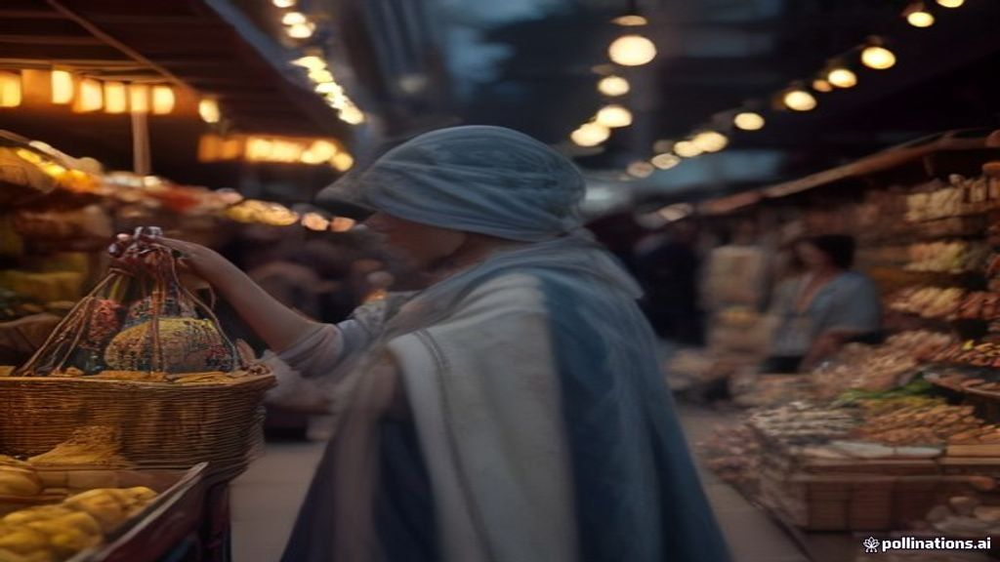

How India's ONDC is Changing the Way You Shop Online
TL;DR
- ONDC is a government initiative to make online shopping fair and open for everyone.
- It's not a single app, but a network that connects different buyer and seller applications.
- Think of it like UPI for e-commerce, allowing seamless transactions between many platforms.
- Recently, ONDC has grown significantly, expanding into new sectors like public transport, B2B procurement, and logistics.
- This means more choices, potentially better prices for you, and easier online selling for small businesses across India.
What's this about?
ONDC, which stands for Open Network for Digital Commerce, is a big initiative by the Indian government to change how we buy and sell things online. Instead of relying on a few large e-commerce websites, ONDC creates an open digital space where many different apps and businesses can connect. It's like building a common digital highway for trade, making it easier for everyone – from a small local shop to a big brand – to participate in online commerce.
Why it's in the news right now
ONDC is buzzing in the news because it's growing rapidly and expanding into many new areas. Just this month, electric mobility company Bounce partnered with ONDC to strengthen India's open logistics infrastructure using electric vehicles for last-mile deliveries. ONDC is also set to launch its B2B (business-to-business) procurement network, called DigiDukaan, in Mumbai by early September 2026, with plans to enter Bengaluru and Delhi this fiscal year. This aims to digitise how kirana stores buy their supplies from distributors.
These recent developments, along with its increasing reach to over 20 crore buyers and 5 lakh sellers across more than 1,000 cities by June 2026, show that ONDC is becoming a significant part of India's digital economy. It's also making big strides in public transport, facilitating over 500,000 metro and bus journeys daily.
How it actually works
ONDC isn't a single website or app like Amazon or Flipkart. Instead, it's a set of rules, or "protocols," that allow different online businesses to talk to each other. Here’s a simple breakdown of how this open network functions:
- Buyer Apps: These are the applications you use to shop. Unlike traditional apps that show products from only one company, an ONDC-enabled buyer app can show you products from any seller who is part of the ONDC network. For example, if you search for "milk" on a buyer app, you might see options from your local kirana store, a big supermarket, or a dairy farm, all listed together for you to choose from.
- Seller Apps: These are used by businesses to list their products and manage orders. A small shop owner can join ONDC through a seller app and instantly make their products visible to customers using various buyer apps. This means they don't need to set up separate online stores on multiple e-commerce platforms.
- Logistics Providers: Companies that deliver goods can also join the ONDC network. This means when you place an order, any available logistics partner on the network can pick up and deliver your item. It's not just limited to the delivery service tied to a specific e-commerce platform.
- Open Protocols: These are the shared technical standards that ensure all these different apps and services can communicate smoothly and understand each other. It’s similar to how all banks use common standards for UPI (Unified Payments Interface) payments, allowing money transfers between different bank accounts and apps.
This entire system works together to create a seamless experience, allowing buyers to discover products and services from a wider range of sellers, and sellers to reach more customers across India.
A simple way to think about it
Imagine you want to buy vegetables. Traditionally, you might go to one big supermarket (which is like a large e-commerce platform) or a specific local vegetable shop.
Now, think of ONDC like a huge, open mandai (market) in your city. Instead of going to one specific shop, you walk into the mandai entrance (this is your buyer app). Inside, you see stalls from hundreds of different sellers – local vegetable vendors, big brand stores, small kirana shops, even farmers directly – all displaying their goods side-by-side. You can compare prices, pick what you like from any stall, and even arrange for a common delivery service to bring everything to your home, no matter which stall you bought it from. ONDC is that open mandai for online shopping, creating a level playing field for everyone.
Why it matters to you
- More Choices and Better Prices: You get to see products and services from many more sellers, including local shops and small businesses. This often leads to more competitive prices and a wider variety of unique offerings.
- Support for Local Businesses: Your neighbourhood kirana store, a local artisan, or a farmer can easily sell their products online and reach customers nationwide. This helps them grow their business without having to pay hefty platform fees to big e-commerce companies.
- Wider Access to Services: Beyond just retail, ONDC is expanding into diverse areas like public transport ticketing, mobility services (like booking a ride), and even financial services such as investing in mutual funds, all accessible through various apps.
- Reduced Dependency: It reduces the market dominance of a few large e-commerce giants, creating a more level playing field for all businesses and potentially lowering commissions for sellers.
- Potentially Faster and More Efficient Deliveries: With more logistics providers on the network, there's potential for more efficient and localised delivery options, especially for smaller businesses.
Common confusions cleared up
- Myth: ONDC is a new e-commerce app like Amazon or Flipkart.
- Myth: You have to download a special ONDC app to use it.
- Myth: ONDC will replace all existing e-commerce platforms.
Fact: ONDC is not* an app or a single platform. It's an open network of protocols that allows different buyer and seller apps to communicate and transact with each other. Think of it as the underlying digital infrastructure, similar to how UPI works for payments.
* Fact: You will use existing or new "buyer apps" that are connected to the ONDC network. Many popular apps are integrating with ONDC, so you might already be using one without realising it's powered by ONDC.
Fact: ONDC aims to create an alternative and complementary* digital commerce ecosystem. Existing platforms can also choose to join the ONDC network, offering their products and services through it. It's about expanding options and fostering competition, not replacing everything.
FAQ
Is ONDC only for buying products?
No, ONDC is expanding beyond just retail products. It now includes services like food delivery, public transport ticketing (for metros and buses), mobility services (like ride-hailing), and even financial services such as mutual fund investments.
Who started ONDC?
ONDC is an initiative by the Government of India, specifically driven by the Department for Promotion of Industry and Internal Trade (DPIIT).
Are the prices on ONDC cheaper?
ONDC aims to reduce intermediaries and platform commissions, which can potentially lead to lower prices for consumers and better margins for sellers. However, prices will vary depending on the seller and product, just like in any market.
How many cities is ONDC available in?
As of June 2026, ONDC had expanded its presence to over 1,000 cities across India, reaching 20 crore buyers. It continues to grow, with specific initiatives like DigiDukaan expanding city by city.
Is it safe to transact on ONDC?
Yes, ONDC is designed with trust and transparency in mind. It has an Integrated Grievance Management (IGM) framework to help resolve issues related to transactions, product quality, or delivery, ensuring a secure environment for buyers and sellers.
Sources
- https://www.ibm.com/blogs/research/2023/07/what-is-ondc/
- https://vasy.ai/blog/what-is-ondc-a-2026-guide-for-indian-retailers/
- https://ondc.org/
- https://uengage.ai/blog/what-is-ondc-benefits-facts-myths/
- https://zopping.com/blog/what-is-ondc/
- https://retail.economictimes.indiatimes.com/news/industry/ondc-to-launch-digidukaan-in-mumbai-by-september-enter-bengaluru-and-delhi-this-fiscal/102640244
- https://unicommerce.com/blog/what-is-open-network-for-digital-commerce-ondc/
- https://alphareach.co/blog/ondc-logistics-and-the-shift-beyond-food-delivery-in-2026/
- https://in.tradingview.com/news/mint:e71d34c382f1b:0/
- https://www.pib.gov.in/PressReleasePage.aspx?PRID=2047535
- https://www.simplilearn.com/tutorials/ecommerce-tutorial/what-is-ondc
- https://vikra.in/blog/how-the-ondc-network-works/
- https://www.issuewire.com/ondc-sees-rapid-growth-as-d2c-brands-and-small-sellers-expand-across-india-1760456209581005
- https://ondc.org/about
- https://ondc.org/quarterly-newsletter-fy26-27-q1
- https://yourstory.com/2026/09/startup-news-daily-roundup-september-14-2026-bounce-ondc-squadstack-info-edge